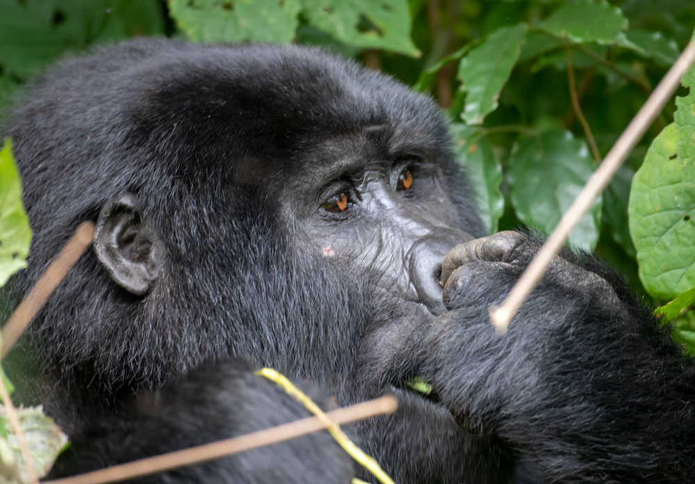

Gorilla Trekking in Uganda vs Rwanda: Experiences & Permits

What Is Gorilla Trekking?
Gorilla trekking is a once-in-a-lifetime wildlife adventure where travelers hike through dense African rainforests to observe endangered mountain gorillas in their natural habitat. Led by expert local guides and park rangers, the trek typically lasts 1–6 hours and culminates in a magical, silent hour spent just meters away from a habituated gorilla family—watching silverbacks, playful juveniles, and nurturing mothers in the wild. This immersive, low-impact experience is strictly regulated (only 96 permits issued daily in Uganda), making it both exclusive and deeply conservation-focused. Whether you choose a budget-friendly or luxury gorilla safari, the encounter fosters a profound connection with nature and supports vital anti-poaching and community programs.
Gorilla Trekking in Uganda: Bwindi & Mgahinga
Uganda is the world’s top destination for accessible and affordable gorilla trekking, hosting nearly half of the planet’s 1,000+ mountain gorillas. The primary location is Bwindi Impenetrable National Park—a UNESCO World Heritage Site in southwestern Uganda—home to over 20 habituated gorilla families across four sectors: Buhoma, Ruhija, Rushaga, and Nkuringo. For a more remote experience, Mgahinga Gorilla National Park (part of the Virunga Massif) offers intimate treks with the Nyakagezi family. Uganda’s gorilla permits cost $800 USD (2025), significantly less than Rwanda’s, making it ideal for budget-conscious travelers, families, and multi-park safari itineraries that include Queen Elizabeth or Murchison Falls.
What to Expect During Gorilla Trekking in Uganda
- Early morning briefing at the park headquarters with experienced Uganda Wildlife Authority (UWA) rangers.
- Hike through dense, misty rainforest in Bwindi Impenetrable or Mgahinga National Park.
- Track one of over 20 habituated mountain gorilla families across four sectors (Buhoma, Ruhija, Rushaga, Nkuringo).
- Spend one unforgettable hour observing gorillas in their natural habitat—photographing, watching behaviors, and listening to vocalizations.
- Learn about conservation efforts and community projects supported by permit fees.
- Receive a commemorative gorilla trekking certificate after your safari.
- Cool mountain climate, ideal for hiking and photography.
Uganda Gorilla Permit: Priced at $800 USD (as of 2025), the Uganda gorilla permit is issued by the Uganda Wildlife Authority (UWA). It includes park entry, ranger-guided trekking, and one hour with a gorilla family. Permits are limited to 96 per day in Bwindi and 8 in Mgahinga—booking 3–6 months in advance is strongly recommended, especially during peak seasons (June–September, December–February).
Gorilla Trekking in Rwanda: Luxury & Convenience

For travelers seeking a premium, streamlined experience, Rwanda’s Volcanoes National Park offers world-class gorilla trekking just 2–3 hours from Kigali International Airport. Often called the “luxury alternative,” Rwanda provides shorter hikes, well-maintained trails, and high-end lodges—ideal for time-limited or comfort-focused visitors. The Rwanda gorilla permit costs $1,500 USD, reflecting its upscale positioning. While more expensive, Rwanda’s efficient logistics and cultural add-ons (like Iby’Iwacu village visits) make it a favorite among European and American luxury travelers. Many choose to combine both countries for the ultimate East African gorilla safari circuit.
What to Expect During Gorilla Trekking in Rwanda
- Convenient morning briefing at Volcanoes National Park headquarters near Musanze (Ruhengeri).
- Trek through bamboo forests and volcanic slopes of the Virunga Massif with Rwanda Development Board (RDB) guides.
- Visit one of 12+ habituated gorilla groups, including the famous Susa and Sabyinyo families.
- Enjoy a serene, one-hour encounter with mountain gorillas—often with easier terrain and shorter hikes than Uganda.
- Optional cultural add-ons: visit Iby’Iwacu Cultural Village or Dian Fossey’s Karisoke Research Center.
- Receive an official gorilla trekking certificate and digital photo package (on select tours).
- Photographic safaris with professional guidance.
Rwanda Gorilla Permit: Costing $1,500 USD, Rwanda’s permit—issued by the Rwanda Development Board (RDB)—offers a premium, high-service experience. It includes park fees, expert guiding, and one hour with gorillas in Volcanoes National Park. Only 96 permits are released daily. Thanks to Rwanda’s efficient logistics and proximity to Kigali (2–3 hours), it’s ideal for luxury travelers and short-stay itineraries.